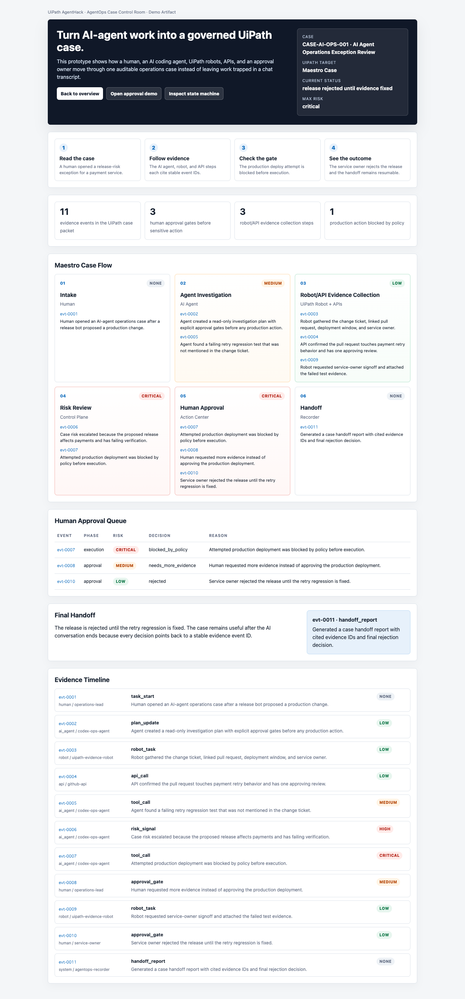
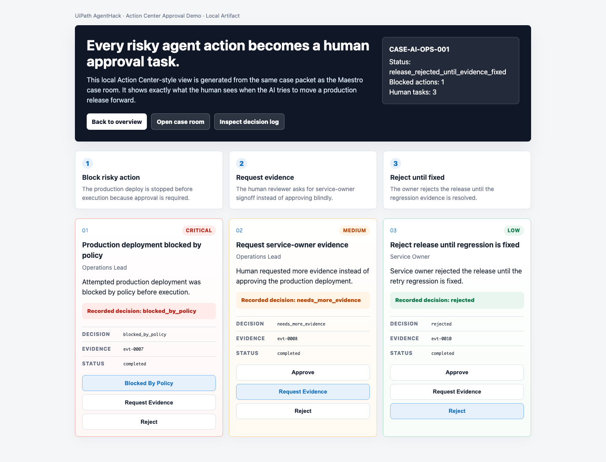

See the production-release exception as one governed Maestro-style case.
Open Case Room
UiPath AgentHack
AgentOps Case Control Room
Turn AI-agent work into a UiPath-governed case with evidence, risk, human approval, robot work items, and handoff.
3-minute judge path: open the case room, inspect the approval task, then verify the runtime proof files.
Review the Action Center-style tasks that block, request evidence, and reject the release.
Open Approval DemoInspect the state machine, transaction lifecycle, decision log, and import boundary.
Open Runtime ProofWhat The Demo Shows
- AI investigation becomes a governed case, not a hidden transcript.
- A UiPath-style robot gathers evidence and creates work items.
- Orchestrator transaction and Action Center decision logs make the lifecycle inspectable.
- Risky production action is blocked until human approval.
- The handoff preserves event IDs, risk, evidence, and decisions.
Proof Snapshot
11verified JSON artifacts
3JSONL lifecycle logs
6Orchestrator transaction events
9Action Center decision events



Verify Locally
cd uipath-agenthack && bash scripts/run_uipath_local_checks.sh
Coding Agent Evidence · Orchestrator transaction log · Action Center decision log · Import readiness